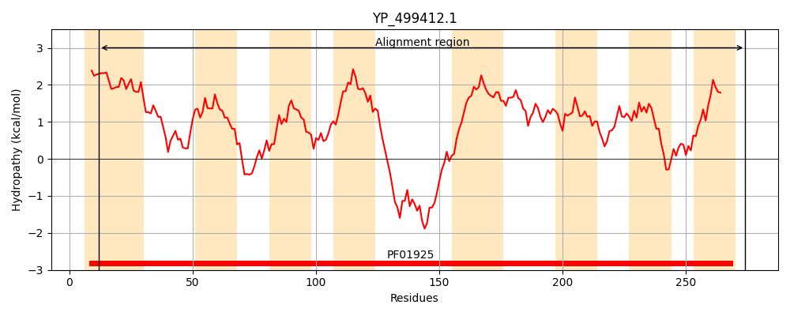
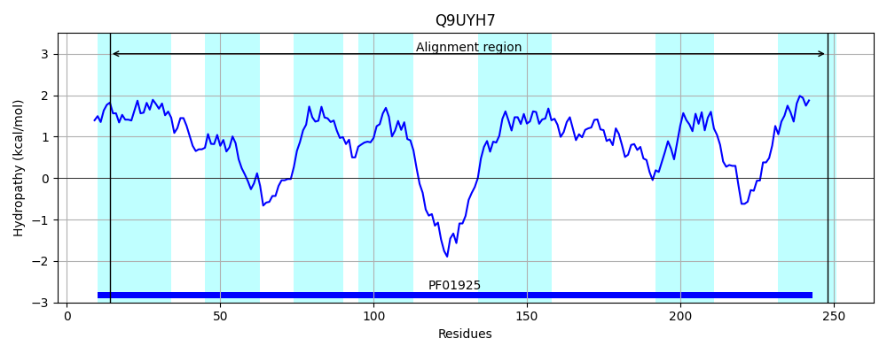
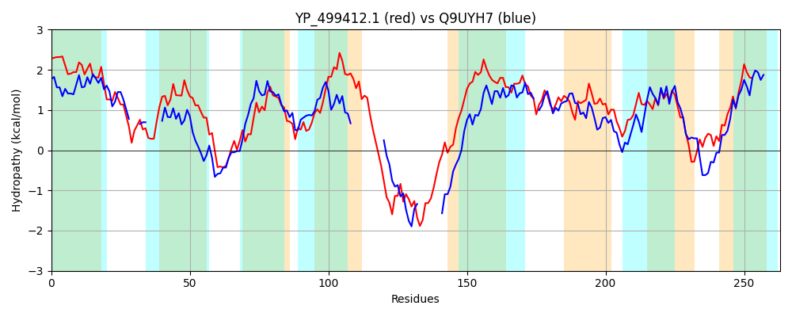

Hit Accession: Q9UYH7
Hit TCID: 2.A.102.4.1
Hit Description: gnl|BL_ORD_ID|19181 gnl|TC-DB|Q9UYH7|2.A.102.4.1 Predicted permease - Pyrococcus abyssi.
Mach Len: 263
e:0.000000
Query TMS Count : 8
Hit TMS Count: 7
TMS-Overlap Score: 4.150000
Predicted Substrates:None
BLAST Alignment:
Score: 276 , Bit scores: 110 bits, E-value: 3.1e-29, Alignment length: 263, Percentage identity: 30
Query: 12 GGLSAIIGSIVGIGGGIIIVPTMVYLGVEHGLLHNITTQVAIGTSSVILIVTGLSSSLGYLKTKQVDIKNGSIFLFGLLPGSLLGSFISRYLTFESFNLYFGIFLIFVAILLMVRNKIKPFKIFDKPKYEKTYVDAKGKTYHYSVPPLFAFITTFLIGILTGLFGIGGGALMTPLMLIVFRFPPHVAVGTSMMMIFFSSVMSSIGHIAQGHVAWGYAIILIISSYFGAKIGVKVNQSIKSDTVVTLLRTVMLLMGIYLIIRAL 274
G ++ + ++ G+GGG ++VP + +GVE +H+ A+GTSS +I T LSSS Y + K++ + G + + G+ LG++++ +++ + FG+ LIFVA +++F + E+ SV I F GI +GL G+GGG + PL L P H AV TS I F+S S+I H G+V + +L+ GA+IG ++ + K+ ++ VML++ I +I++ L
Sbjct: 14 GVVTGTLAAMFGLGGGFLLVPILNLMGVE---IHH-----AVGTSSASIIFTALSSSYAYHRQKRILYRVGILLASTAVVGAYLGAWMTSFISPGKLKVIFGVTLIFVA-----------YRMFRGKRGERRE--------EISVNEKLVPIGGFFSGIASGLLGVGGGIINVPL-LTWLGVPIHYAVATSSFAIVFTSTSSAIKHYFLGNVELYWLPLLVPGLIIGAQIGARIAKRTKASSLRKGFAVVMLILAIRMILKGL 248 | Protein Hydropathy Plots: |
|---|
|  |  |
Pairwise Alignment-Hydropathy Plot:
|
|---|
|  |